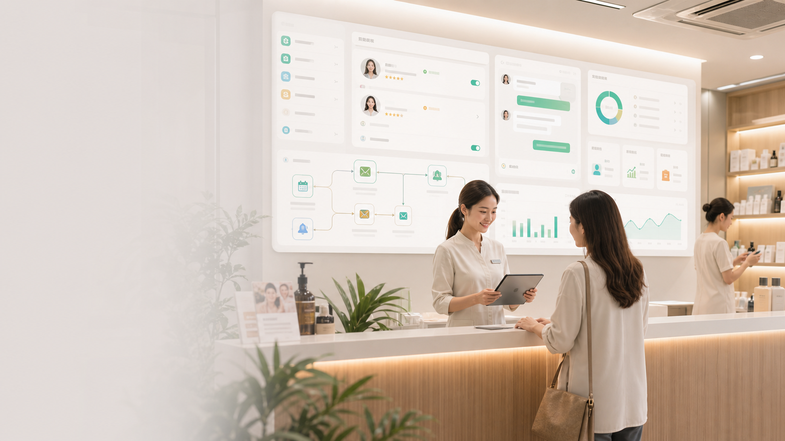

客户咨询分散
价格、体验流程、适合人群、注意事项、地址预约都靠人工反复解释，客户容易流失。

为什么先做海底轮
海底轮项目既有体验服务，也有招商复制空间。真正的难点不是“有没有产品”，而是客户来了谁接、怎么讲、怎么问禁忌、怎么预约、怎么培训员工、怎么持续复购。
价格、体验流程、适合人群、注意事项、地址预约都靠人工反复解释，客户容易流失。
坐姿、设备位置、腰带左右对称、耗材卫生、体验反馈、记录表单都需要严格 SOP。
PPT 讲解、互动体验、成交节奏、收款规则和团队配合如果不标准，很难复制到全国市场。
短视频、朋友圈、案例故事、招商话术和数字人素材没有持续生产机制。
业务闭环
短视频、朋友圈、直播话术、招商素材持续生成。
项目介绍、门店案例、体验流程、合作入口统一展示。
自动回答常见问题，并完成禁忌提示与人工转接。
收集客户信息、体验意向、时间偏好和跟进状态。
按 SOP 完成准备、接待、操作、反馈和记录。
自动提醒回访、卡项推荐、活动邀约和转介绍。
把门店样板、培训资料、话术和看板打包交付。
系统工作台
今日门店任务
系统提醒员工补充客户基础信息、体验禁忌、舒适度确认和签字记录。
AI 自动生成回访话术，提醒员工跟进感受、复购意向和转介绍机会。
系统准备接待流程、PPT 讲解重点、体验顺序、成交问题清单和接待分工。
功能模块
展示项目价值、门店环境、体验流程、合作政策和预约入口。
承接常见咨询，识别敏感问题，遇到安全、投诉、价格谈判自动转人工。
体验前采集基础信息、注意事项、舒适度反馈和确认记录。
沉淀准备、耗材、卫生、设备、坐姿、反馈、清场和复盘流程。
生成短视频脚本、口播文案、招商讲解、案例故事和朋友圈素材。
规范接待动线、PPT 讲解、体验安排、成交节奏、收款规则和团队配合。
按体验时间、客户反馈、卡项周期和节假日自动提醒回访。
跟踪咨询量、预约量、到店量、成交量、复购率、员工跟进和渠道效果。
行业交付模板
合规提示：本系统用于门店经营、客户接待、流程管理与内容生产，不承诺医疗诊断或治疗效果。所有体验服务需以专业人员判断、客户知情确认和门店安全规范为前提。
合作方案
样板启动版
官网入口、AI 客服、预约表单、基础 SOP、回访话术。
7-10 天上线增长运营版
增加数字人内容、复购流程、员工任务、经营看板和周复盘。
推荐首选招商复制版
增加招商接待、合伙人资料、培训考核、交付清单和区域看板。
可规模复制落地流程
梳理产品、客户、门店动线、招商政策、现有素材和安全边界。
完成官网、AI 客服、表单、知识库、SOP 和基础看板。
用真实客户测试咨询、预约、体验、回访和员工执行。
沉淀培训、接待、成交、复盘模板，形成区域交付包。
开始做样板
你可以先从一个真实门店或招商样板开始，把获客入口、AI 接待、门店 SOP、复购回访和招商交付跑通。跑通后，再复制到更多门店和行业。